4130B32 power steering pump mount - r r
- Path
- Procedures > 41 STEERING > 4130 POWER ASSISTED STEERING > 4130B power steering hydraulic sytem > 4130B32 power steering pump mount - r r
- Kind
- repair procedure (removal / refitting; the operation number is the code)
- Applies to
- all engines; all production periods
- Interactive page
- https://sloeber94.github.io/elrnDB-a156/en/#/3238136
Applies to: engines: 1.6 TS , 1.8 TS; all production periods
Applies to: all engines; all production periods
Applies to: engines: 2.4 JTD 10v; all production periods
Position the vehicle on the ramp
Ensure that the ignition key is in the OFF position, then disconnect the negative battery terminal (-).
 | Name | Connector |
|---|---|---|
- | Battery |
Proceed with removal 1016A10 sound-proofing cover - r + r .
Proceed with the removal 4450B10 Front WHEEL (one) - R.R. (Right side).
Proceed with the removal 7055B64 Engine compartment DUST shield in front wheel arch (one), left or right - R.R. (Right side).
Proceed with removal 7055B54 under-engine guard - r r .
Proceed with removal 1092G10 single engine belt r r .
Proceed with removal 1092A12 crankshaft pulley - r+r for versions with air conditioner .
Proceed with removal 1092G14 engine component single belt mobile tensioner - r + r .
Proceed with removal 1032D12 timing system protective cover(s) - r + r .
Proceed with the removal 1008C14 engine link bracket - r r .
Proceed with removal 1032B14 toothed timing belt - r + r for timing adjustment or replacement versions with air conditioner .
Proceed with removal 1032C31 fixed timing tensioner - r r .
1. Undo the bolts (1a) and remove the power steering pump drive pulley (1b).
2. Undo the bolts (2a) and move the power assisted steering pump (2b) away from the support.
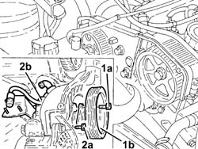
Applies to: engines: 2.4 JTD 10v; all production periods
1. Undo the bolts (1a) and remove the alternator (1b) without disconnecting the electrical connections.
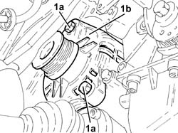
Applies to: engines: 2.4 JTD 10v; all production periods
1. Undo the bolts (1a) and remove the power assisted steering pump support (1b).
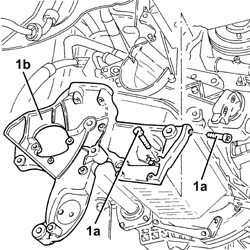
Applies to: engines: 2.4 JTD 10v; all production periods
Place the power assisted steering pump back in its housing and secure it by tightening the bolts to the recommended torque.
Place the alternator back in its housing and secure it using the bolts.
Place the power assisted steering pump back in its housing and fix it tightening the bolts to the recommended torque.
 | Fastening | Component | Ø | Value (daNm) |
|---|---|---|---|---|
- | Bolt | POWER STEERING PUMP | M8 | (Support side) 1.9 ÷ 2.3 |
Place the power assisted steering pump drive pulley back in its housing and secure it tightening the bolts to the recommended torque.
| Fastening | Component | Ø | Value (daNm) |
|---|---|---|---|---|
- | Bolt | POWER STEERING PUMP DRIVE PULLEY | M6 | 0.6 ÷ 0.8 |
Proceed with refitting 1032C31 fixed timing tensioner - r r .
Proceed with refitting 1032B14 toothed timing belt - r + r for timing adjustment or replacement versions with air conditioner .
Proceed with the refitting 1008C14 engine link bracket - r r .
Proceed with refitting 1032D12 timing system protective cover(s) - r + r .
Proceed with refitting 1092G14 engine component single belt mobile tensioner - r + r .
Proceed with refitting 1092A12 crankshaft pulley - r+r for versions with air conditioner .
Proceed with refitting 1092G10 single engine belt r r .
Proceed with refitting 7055B54 under-engine guard - r r .
Proceed with the refitting 7055B64 Engine compartment DUST shield in front wheel arch (one), left or right - R.R. (Right side).
Proceed with the refitting 4450B10 Front WHEEL (one) - R.R. (Right side).
Proceed with refitting 1016A10 sound-proofing cover - r + r .
Connect the negative (-) battery terminal
Remove the car from the ramps.
Applies to: engines: 1.9 JTD 16v; all production periods
Position the vehicle on the ramp
Ensure that the ignition key is in the OFF position, then disconnect the negative battery terminal (-).
| Name | Connector |
|---|---|---|
- | Battery |
Proceed with removal 1016A10 sound-proofing cover - r + r .
Proceed with removal 1008C10 power unit upper reaction link r r .
Proceed with removal 1060G80 ds electric injection control unit - r r .
Proceed with removal 4450B04 right front wheel r r .
Proceed with removal 7055B54 under-engine guard - r r .
Proceed with removal - 7055B91 Right front WHEEL ARCH LINER - R.R. .
Proceed with removal 1092G10 single engine belt r r .
Proceed with removal 1092A10 Crankshaft services PULLEY - R.R. .
Proceed with removal 1092G20 engine component single belt fixed tensioner - one - r + r .
Proceed with removal 1032D12 timing system protective cover(s) - r + r .
Proceed with removal 1032B10 toothed timing belt - r + r for timing adjustment or replacement .
Proceed with removal 1032C10 MOVING timing TENSIONER - R.R. with timing belt/chain removed .
Proceed with removal 1032C30 fixed timing system tensioner - r + r with timing belt removed .
Proceed with removal 1084A16 oil dip stick pipe - r r .
1. Undo the bolt (1a) and remove the single drive belt tensioner (1b).
2. Undo the bolts (2a) and remove the power assisted steering pump drive pulley (2b).
3. Undo the bolts (3a) and move the power assisted steering pump (3b) backwards in relation to the support.
4. Undo the bolts fixing the alternator and move it back.
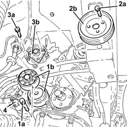
Applies to: engines: 1.9 JTD 16v; all production periods
1. Undo the bolts (1a) and remove the power assisted steering pump support (1b).
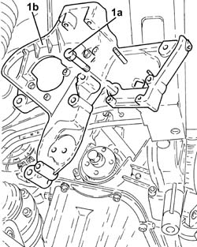
Applies to: engines: 1.9 JTD 16v; all production periods
1. Place the power assisted steering pump mounting (1a) back in its housing and fix it tightening the bolts (1b) to the recommended torque.
| Fastening | Component | Ø | Value (daNm) |
|---|---|---|---|---|
1b | Bolt | POWER STEERING PUMP SUPPORT/BRACKET | M8 | (Engine crankcase side) 2.3 ÷ 2.8 |
| Fastening | Component | Ø | Value (daNm) |
|---|---|---|---|---|
1b | Bolt | POWER STEERING PUMP SUPPORT/BRACKET | M10 | (Crankcase side) 4.5 ÷ 5.5 |
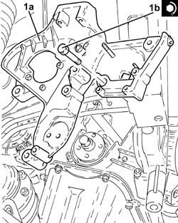
Applies to: engines: 1.9 JTD 16v; all production periods
1. Place the alternator back in its housing and tighten the bolts to the recommended torque.
| Fastening | Component | Ø | Value (daNm) |
|---|---|---|---|---|
1 | Bolt | ALTERNATOR ASSEMBLY | M10 | 4.5 ÷ 5.5 |
| Fastening | Component | Ø | Value (daNm) |
|---|---|---|---|---|
1 | Bolt | ALTERNATOR ASSEMBLY | M12 | 6.3 ÷ 7.7 |
2. Place the power assisted steering pump (2a) back in its housing and secure it by tightening the bolts (2b) to the recommended torque.
| Fastening | Component | Ø | Value (daNm) |
|---|---|---|---|---|
2b | Bolt | POWER STEERING PUMP | M8 | (Support side) 2.3 ÷ 2.8 |
3. Place the power assisted steering pump drive pulley (3a) back in its housing and secure it tightening the bolts (3b) to the recommended torque.
| Fastening | Component | Ø | Value (daNm) |
|---|---|---|---|---|
3b | Bolt | POWER STEERING PUMP DRIVE PULLEY | M8 | (Power assisted steering pump side 23 28 |
4. Place the engine components single drive belt moving tensioner (4a) back in its housing and fix it tightening the bolt (4b) to the recommended torque.
| Fastening | Component | Ø | Value (daNm) |
|---|---|---|---|---|
4b | Bolt | SINGLE SERVICES MOBILE BELT TENSIONER | M8 | 2.3 ÷ 2.8 |
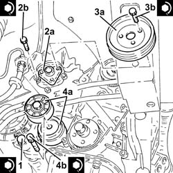
Applies to: engines: 1.9 JTD 16v; all production periods
Proceed with refitting 1084A16 oil dip stick pipe - r r .
Proceed with refitting 1032C30 fixed timing system tensioner - r + r with timing belt removed .
Proceed with refitting 1032C10 MOVING timing TENSIONER - R.R. with timing belt/chain removed .
Proceed with refitting 1032B10 toothed timing belt - r + r for timing adjustment or replacement .
Proceed with refitting 1032D12 timing system protective cover(s) - r + r .
Proceed with refitting 1092G20 engine component single belt fixed tensioner - one - r + r .
Proceed with refitting 1092A10 Crankshaft services PULLEY - R.R. .
Proceed with refitting 1092G10 single engine belt r r .
Proceed with refitting - 7055B91 Right front WHEEL ARCH LINER - R.R. .
Proceed with refitting 7055B54 under-engine guard - r r .
Proceed with refitting 4450B04 right front wheel r r .
Proceed with refitting 1060G80 ds electric injection control unit - r r .
Proceed with refitting 1008C10 power unit upper reaction link r r .
Proceed with refitting 1016A10 sound-proofing cover - r + r
Connect the negative (-) battery terminal
Remove the car from the ramps.
Applies to: engines: 2.4 JTD 20v; all production periods
Position the vehicle on the ramp
Proceed with removal 4450B04 right front wheel r r .
Proceed with removal 7055B54 under-engine guard - r r .
Proceed with removal - 7055B91 Right front WHEEL ARCH LINER - R.R. .
Proceed with removal - 7055B66 Engine compartment DUST SHIELD protection in right front wheel arch - R.R. .
Proceed with removal 1092G10 single engine belt r r .
Proceed with removal 1092A10 Crankshaft services PULLEY - R.R. .
Proceed with removal 1092G21 engine component single belt fixed tensioner - r rwith belt removed .
Proceed with removal 1016A10 sound-proofing cover - r + r .
Proceed with removal 1008C10 power unit upper reaction link r r .
Proceed with removal 1032D12 timing system protective cover(s) - r + r .
Proceed with removal 1032B10 toothed timing belt - r + r for timing adjustment or replacement
1. Loosen the bolts fixing the power assisted steering pump pulley.
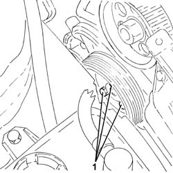
Applies to: engines: 2.4 JTD 20v; all production periods
1. Disconnect the rapid attachment for the fuel return pipe to the tank, fuel return manifold pipe side.
2. Disconnect the rapid attachment for the fuel return pipe from the fuel filter, return manifold pipe side.
3. Disconnect the rapid attachment of the supply pipe from the fuel filter to the pressure pump, pressure pump side.
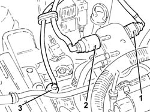
Applies to: engines: 2.4 JTD 20v; all production periods
Proceed with removal 1084A16 oil dip stick pipe - r r .
Proceed with removal 1060F50 fuel return manifold - r r .
Proceed with removal 1060G70 vacum tank for controlling engine air intake r r .
Proceed with removal 1080D34 engine oil vapour separator - r + r .
1. Undo the nut for the upper alternator fixing bolt.
2. Undo the bolts (2a) and remove the alternator mounting bracket (2b).
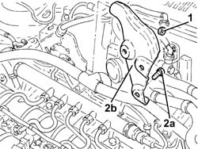
Applies to: engines: 2.4 JTD 20v; all production periods
1. Completely undo the bolts (1a) and remove the power steering pump pulley (1b).
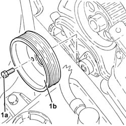
Applies to: engines: 2.4 JTD 20v; all production periods
1. Undo the fixing bolts and move the power assisted steering pump as far back as necessary.
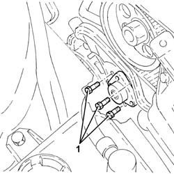
Applies to: engines: 2.4 JTD 20v; all production periods
Position a hydraulic jack under the gearbox.
Using the hydraulic jack, place the gearbox side rigid power unit support in contact with the flexible mounting.
Tighten the bolt fixing the power unit gearbox side rigid support to the flexible mounting.
Remove the hydraulic jack from under the gearbox.
Proceed with removal 1076B70 exhaust pipe between pre-catalytic converter and catalytic converter - r r .
1. Undo the bolt fixing the rear power unit rigid support to the flexible mounting.
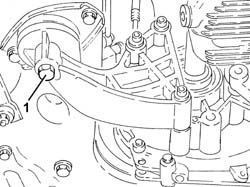
Applies to: engines: 2.4 JTD 20v; all production periods
Proceed with removal 2710A31 intermediate drive shaft - r r .
1. Disconnect the electrical connections from the alternator.
| Name | Connector |
|---|---|---|
1 | Alternator |
2. Undo the lower bolt fixing the alternator to the support for the power assisted steering pump.
3. Remove the alternator.
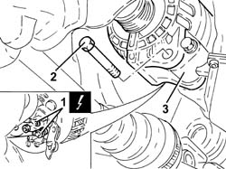
Applies to: engines: 2.4 JTD 20v; all production periods
Proceed with removal 1032C30 fixed timing system tensioner - r + r with timing belt removed .
1. Undo the bolts (1a) and remove the power assisted steering pump support (1b).
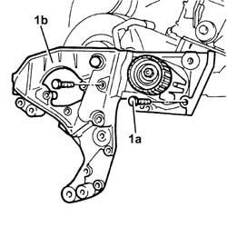
Applies to: engines: 2.4 JTD 20v; all production periods
1. Place the power assisted steering pump mounting (1a) back in its housing and fix it tightening the bolts (1b) to the recommended torque.
| Fastening | Component | Ø | Value (daNm) |
|---|---|---|---|---|
1b | Bolt | POWER STEERING PUMP SUPPORT/BRACKET | M10 | 4.5 ÷ 5.5 |
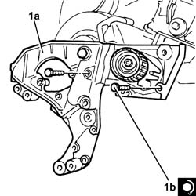
Applies to: engines: 2.4 JTD 20v; all production periods
Proceed with refitting 1032C30 fixed timing system tensioner - r + r with timing belt removed .
Place the alternator back in its housing and secure it to the power assisted steering pump support using the lower bolt without tightening it.
Connect the electrical connections to the alternator.
Proceed with refitting 2710A31 intermediate drive shaft - r r .
1. Tighten the bolt securing the rigid rear power unit support to the flexible mounting to the recommended torque.
| Fastening | Component | Ø | Value (daNm) |
|---|---|---|---|---|
1 | - | - | - | - |
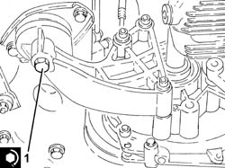
Applies to: engines: 2.4 JTD 20v; all production periods
Proceed with refitting 1076B70 exhaust pipe between pre-catalytic converter and catalytic converter - r r .
Position a hydraulic jack under the gearbox.
Undo the bolt fixing the power unit gearbox side rigid support to the flexible mounting.
Lower the hydraulic jack until the drive shaft joint is resting on the front suspension crossmember.
Remove the hydraulic jack from under the gearbox.
1. Place the power assisted steering pump (1a) complete with pipes back in its housing and fix it tightening the bolts (1b) to the recommended torque.
| Fastening | Component | Ø | Value (daNm) |
|---|---|---|---|---|
1b | Bolt | POWER STEERING PUMP | M8 | (Support side) 2.3 ÷ 2.8 |
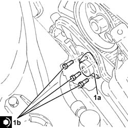
Applies to: engines: 2.4 JTD 20v; all production periods
Place the power assisted steering pump back in its housing and fix it without tightening the bolts.
Place the alternator mounting bracket back in its housing, then secure it using the bolts and the nut for the upper alternator fixing bolt.
Proceed with refitting 1080D34 engine oil vapour separator - r + r .
Proceed with refitting 1060G70 vacum tank for controlling engine air intake r r .
Proceed with refitting 1060F50 fuel return manifold - r r .
Proceed with refitting 1084A16 oil dip stick pipe - r r .
Connect the rapid attachment of the supply pipe from fuel filter to pressure pump, pressure pump side.
Connect the rapid attachment for the fuel return pipe from the fuel filter, return manifold pipe side.
Connect the rapid attachment for the fuel return pipe to the tank, fuel return manifold pipe side.
Proceed with refitting 1032B10 toothed timing belt - r + r for timing adjustment or replacement .
Proceed with refitting 1032D12 timing system protective cover(s) - r + r .
Proceed with refitting 1008C10 power unit upper reaction link r r .
Proceed with refitting 1016A10 sound-proofing cover - r + r .
Proceed with refitting 1092G21 engine component single belt fixed tensioner - r rwith belt removed .
Proceed with refitting 1092A10 Crankshaft services PULLEY - R.R. .
Proceed with refitting 1092G10 single engine belt r r .
Tighten the bolts fixing the power assisted steering pump pulley to the recommended torque.
| Fastening | Component | Ø | Value (daNm) |
|---|---|---|---|---|
- | Bolt | POWER STEERING PUMP DRIVE PULLEY | M8 | (Power assisted steering pump side 23 28 |
Proceed with refitting - 7055B66 Engine compartment DUST SHIELD protection in right front wheel arch - R.R. .
Proceed with refitting - 7055B91 Right front WHEEL ARCH LINER - R.R. .
Proceed with refitting 7055B54 under-engine guard - r r .
Proceed with refitting 4450B04 right front wheel r r .
Remove the car from the ramps.
Topics linked from this page (30)
- 1008C10 power unit upper reaction link r r
- 1008C14 engine link bracket - r r
- 1008C18 link mount on engine - r r
- 1008C19 engine link mount - r r
- 1016A10 sound-proofing cover - r + r
- 1032B10 toothed timing belt - r + r for timing adjustment or replacement
- 1032B14 toothed timing belt - r + r for timing adjustment or replacement versions with air conditioner
- 1032C10 MOVING timing TENSIONER - R.R. with timing belt/chain removed
- 1032C30 fixed timing system tensioner - r + r with timing belt removed
- 1032C31 fixed timing tensioner - r r
- 1032D12 timing system protective cover(s) - r + r
- 1060F50 fuel return manifold - r r
- 1060G70 vacum tank for controlling engine air intake r r
- 1060G80 ds electric injection control unit - r r
- 1076B70 exhaust pipe between pre-catalytic converter and catalytic converter - r r
- 1080D34 engine oil vapour separator - r + r
- 1084A16 oil dip stick pipe - r r
- 1092A10 Crankshaft services PULLEY - R.R.
- 1092A12 crankshaft pulley - r+r for versions with air conditioner
- 1092G10 single engine belt r r
- 1092G14 engine component single belt mobile tensioner - r + r
- 1092G20 engine component single belt fixed tensioner - one - r + r
- 1092G21 engine component single belt fixed tensioner - r rwith belt removed
- 2710A31 intermediate drive shaft - r r
- 4450B04 right front wheel r r
- 4450B10 Front WHEEL (one) - R.R.
- 7055B54 under-engine guard - r r
- 7055B64 Engine compartment DUST shield in front wheel arch (one), left or right - R.R.
- A1B Battery ( BATTERY NEGATIVE )
- A10 Alternator